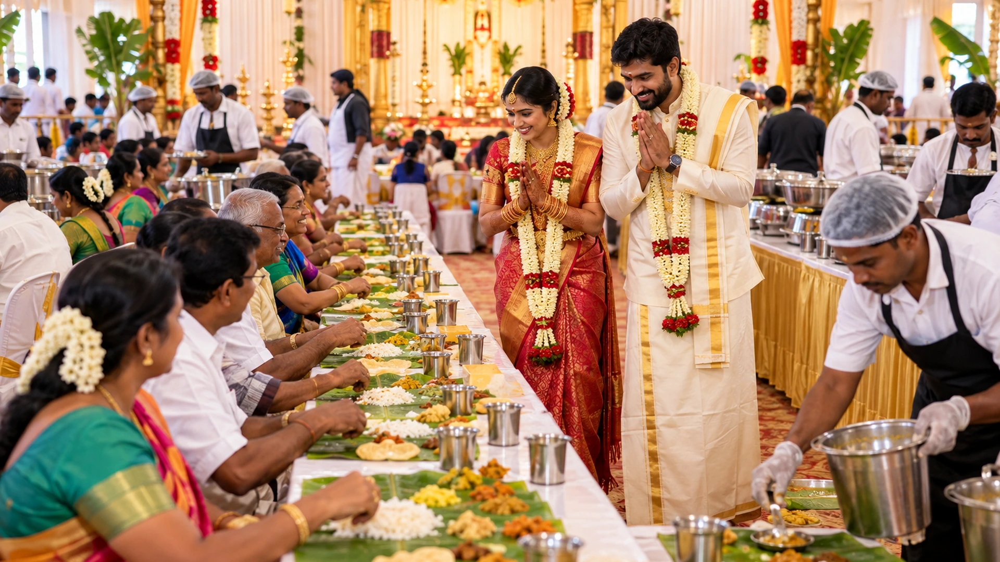
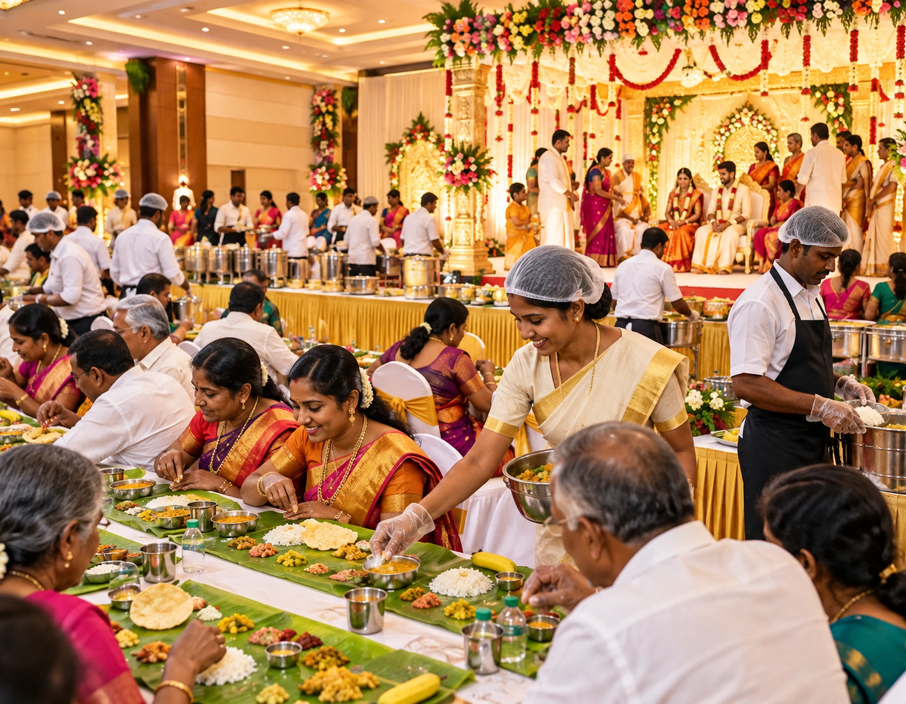
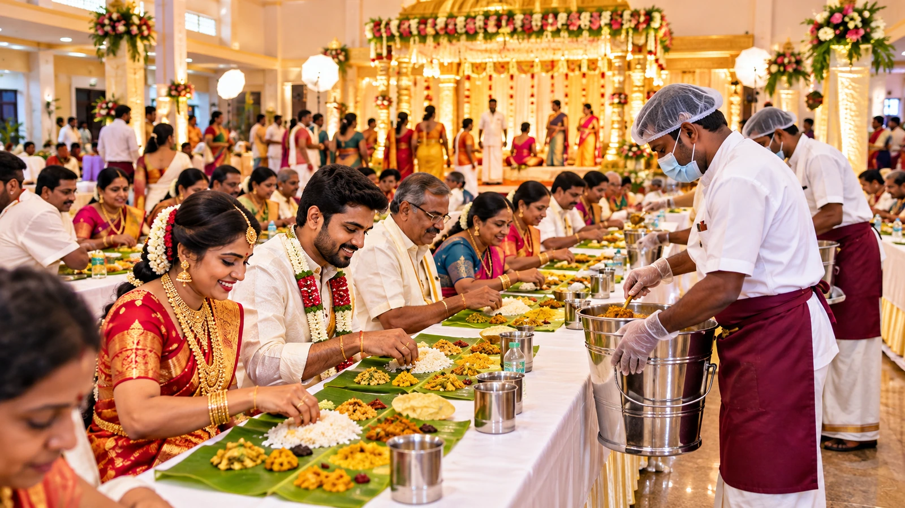
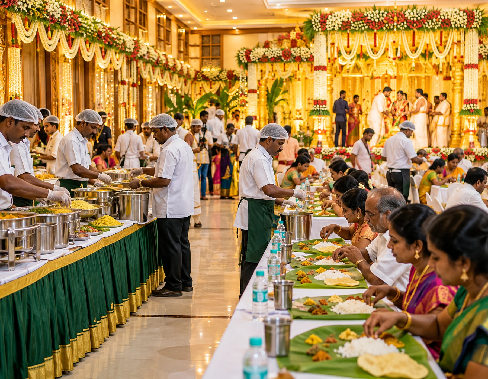
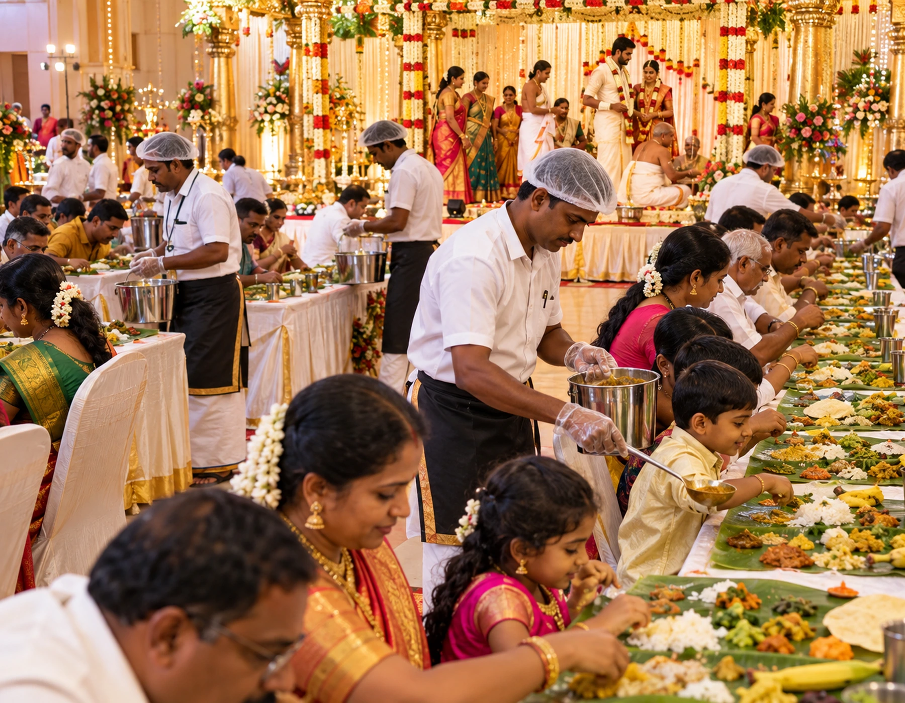
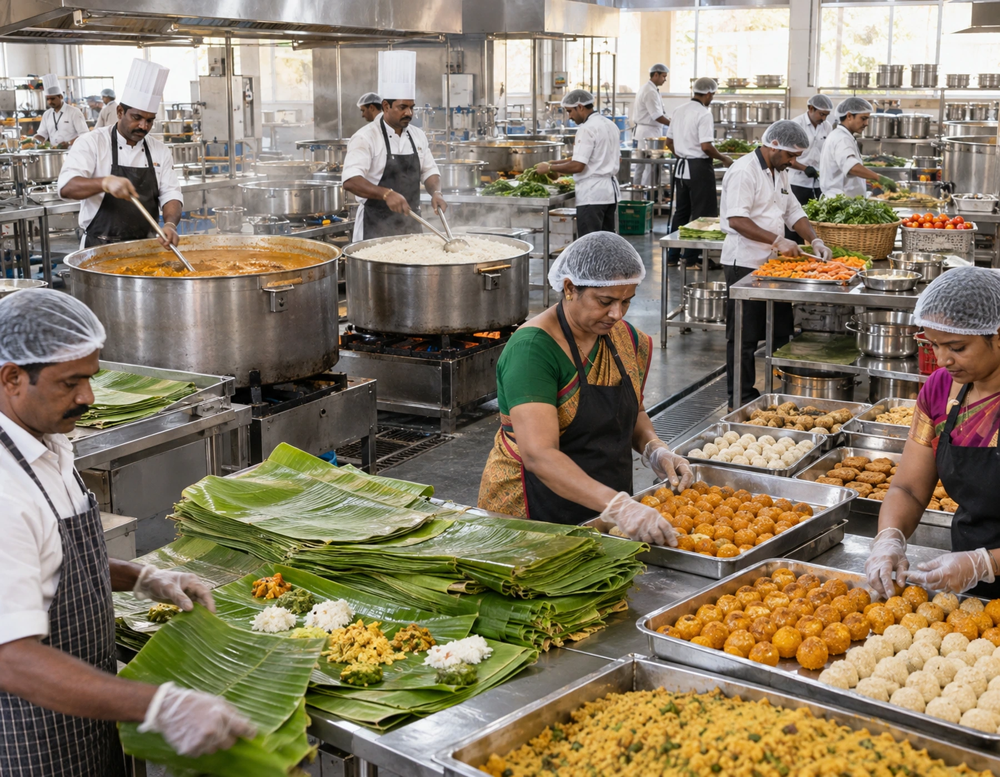

Seat elders before breakfast traffic builds
Reserve easy-access seats and make sure water and tiffin reach senior relatives without requiring them to stand in the general queue.

Wedding & Marriage For hindu wedding catering, this supports ceremonial timing, family hospitality and a smooth dining flow.
A Hindu wedding meal has to follow the ceremony, not compete with it. Vellore Catering World plans morning tiffin, filter coffee, muhurtham pauses, banana-leaf lunch, family hospitality and kitchen production around the actual wedding timetable.

Service overview The final hindu wedding catering choice is confirmed with the event schedule.
The catering captain works backward from the muhurtham time. Coffee, breakfast, kitchen fire-up, leaf laying and lunch production are scheduled so key rituals stay uninterrupted while food reaches guests at the right temperature.
In Hindu Wedding catering, reception guest flow is best decided alongside guest count and venue conditions. It also changes how the team handles late guest arrivals during setup and service.
Share the venue, approximate guest count, meal timing and food preferences. The catering scope can then be shaped around the real event rather than a generic package. For hindu wedding catering as a wedding, the detail is adapted before confirmation.
Why choose us For hindu wedding catering, this supports ceremonial timing, family hospitality and a smooth dining flow.
A Hindu wedding may begin with relatives arriving before sunrise and continue through several rituals before lunch. We plan breakfast, beverages, sweets and the main meal as connected service windows rather than unrelated menu packages.
Reserve easy-access seats and make sure water and tiffin reach senior relatives without requiring them to stand in the general queue.
A firm breakfast close time gives staff space to reset and prevents utensil movement from interrupting the ceremonial area.
The first decoction batch should be ready for family members and guests arriving before sunrise, with later batches made fresh.
Track idli, pongal and vada in smaller refill lots so late breakfast guests receive fresh food without excessive leftovers.
What is included For hindu wedding catering, this detail is checked against the venue and guest profile.
Idli, pongal, vada, dosa and filter coffee are easiest to enjoy before guests settle around the mandapam. We set a practical breakfast close time so service movement does not clash with the busiest ritual period.
Event formats For hindu wedding catering as a wedding, the detail is adapted before confirmation.
During moments such as kanyadanam, mangalyadharanam and sapthapadi, the hall should not feel like a dining room in motion. Service staff use planned pause points while kitchen production continues quietly in the background.
When the family gathers for the oonjal ceremony, servers reduce visible movement near the ritual path and keep production backstage.
Sweet trays and water can be ready before garland exchange without blocking photographers or family members around the couple.
A clear bride-side and groom-side contact helps the catering captain resolve family meal requests without receiving conflicting instructions.
The service lead should know the live ceremony timing so dining release decisions follow the actual ritual rather than the printed invitation time.
Cuisine choices The final hindu wedding catering choice is confirmed with the event schedule.
Priests, elderly relatives and family members tied to rituals may have different meal windows from the general guest flow. Their portions and seating are planned separately so they are not left waiting during ceremony transitions.
Customisation The final hindu wedding catering choice is confirmed with the event schedule.
A 700-guest wedding with 180 dining seats behaves very differently from one with a 400-seat dining hall. We plan leaf laying, first service, clearing and reset times from actual seating capacity.
Multiple small service points can handle coffee quickly while keeping the mandapam entrance open.
Accessible seating works best when elders can reach water and handwash areas without crossing long crowded aisles.
Large rice and sambar production begins according to finishing time, not simply when staff arrive at the venue.
The dining supervisor and kitchen lead should receive the same signal so leaf laying and hot-food dispatch start together.
Live counters For hindu wedding catering as a wedding, the detail is adapted before confirmation.
Traditional wedding menus require reliable hot production and fast service. The venue review checks cooking area, fuel rules, water points, washing space, vessel movement and backup arrangements before the final dish list is locked.
Service styles For hindu wedding catering, this detail is checked against the venue and guest profile.
Sambar, rasam, rice and hot vegetables need frequent movement from production to service. We map the route so servers do not cross used-leaf clearing lanes or guest queues.
Guest capacity For hindu wedding catering as a wedding, the detail is adapted before confirmation.
Wedding rituals do not always finish at the exact planned minute. We favour preparation and holding methods that protect texture and temperature when lunch has to shift without compromising quality.
A small protected area lets immediate family eat when free from rituals while general guest service continues normally.
If the host uses stage announcements, the service team should know when guests will be directed toward dining.
Knowing seats per batch allows the team to calculate leaf stock, water setup and expected reset time.
Event process For hindu wedding catering, this supports ceremonial timing, family hospitality and a smooth dining flow.
The sacred fire, ritual materials and priest movement need their own clear zone. Food holding, service vessels and guest circulation are arranged so catering operations never interfere with the ceremonial setup.
Staff can carry food to accessible tables for guests who cannot comfortably use standard row seating.
Water service continues around family waiting areas even when the main dining hall has not opened.
Packed ceremonial sweets and guest meal sweets are counted and stored separately to avoid accidental use.
Simple direction planning reduces crowding where the marriage-hall lobby connects to the dining floor.
The key wedding moment gets a calm visual environment while kitchen production remains active behind the scenes.
Food quality & hygiene The final hindu wedding catering choice is confirmed with the event schedule.
Leaf orientation, salt, pickle, sweet, poriyal, kootu, appalam, rice and gravies are served in a defined sequence. Consistency helps large teams serve hundreds of guests quickly without making the meal feel rushed.
Kitchen & infrastructure For hindu wedding catering, this supports ceremonial timing, family hospitality and a smooth dining flow.
Coffee demand often peaks before the muhurtham, after breakfast and again after lunch. Separate decoction and milk batches keep the flavour consistent instead of producing one oversized batch that sits too long.
A few gentler sides and controlled spice levels make the traditional meal easier for senior relatives without changing the core menu.
One team member can help the couple, parents and close relatives eat when ceremony and photography schedules finally allow.
Coffee is refreshed after the main rush so guests leaving the hall receive a hot final beverage rather than an old batch.
The meal window for priests and ritual assistants should fit their obligations rather than the public guest schedule.
Our chefs & team For hindu wedding catering, this detail is checked against the venue and guest profile.
Outstation family members, local guests and ritual participants rarely arrive together. A controlled tiffin window with smaller refills keeps idli, pongal and vada fresh across the arrival period.
Servers report low vessels before they run empty so replacement containers arrive without interrupting a row.
Smaller fresh batches preserve crispness across multiple dining rounds better than one early bulk fry.
Soap, water flow, drainage and queue space are verified before guests enter the dining area.
Event gallery The final hindu wedding catering choice is confirmed with the event schedule.
Some Hindu weddings request no onion or garlic, particular oil choices, specific sweets or family recipes. These preferences are recorded early so procurement and kitchen separation are practical, not last-minute adjustments.

Food gallery For hindu wedding catering, this supports ceremonial timing, family hospitality and a smooth dining flow.
Priests may need food at a different time or a simpler menu depending on the ceremony. A dedicated meal count prevents their service from being lost inside the main guest total.



Case-study format The final hindu wedding catering choice is confirmed with the event schedule.
Sweets served on the leaf, packed seer items and snacks taken with coffee are different quantities. We calculate each use separately instead of applying one generic per-guest sweet count.
Illustrative planning scenario: a 264-guest wedding in Vellore with buffet service, a 5-part menu and one live counter. The planning focus would be ceremonial timing, family hospitality and a smooth dining flow. This is an example workflow, not a claim about a specific past client event. For hindu wedding catering, this supports ceremonial timing, family hospitality and a smooth dining flow.
Customer testimonials For hindu wedding catering, this detail is checked against the venue and guest profile.
Hot gravies move best through assigned service teams with refill points close to the dining rows. This keeps the meal moving evenly and prevents one end of the hall from waiting.
A dedicated point or assigned row servers prevent beverage traffic from blocking hot-food movement.
Google reviews For hindu wedding catering as a wedding, the detail is adapted before confirmation.
Dry sides and crisp items need different refill timing from rice and gravies. Service supervisors track each row so portions remain consistent through every dining batch.
Use the live Google result to view current public feedback before booking. For hindu wedding catering, this detail is checked against the venue and guest profile.
Venue types The final hindu wedding catering choice is confirmed with the event schedule.
Hydration stations and tumbler refills are positioned where guests can reach them without crossing hot-vessel traffic. During lunch, water service is integrated into the row plan rather than handled randomly.
Areas we serve For hindu wedding catering, this supports ceremonial timing, family hospitality and a smooth dining flow.
Not every senior guest is comfortable with standard marriage-hall seating. We can reserve accessible tables or assisted seating while keeping the same traditional meal experience.
Business base: 90/32, Subramanya Swamy Koil St, Kosapet, Vellore, Tamil Nadu 632001. The final hindu wedding catering choice is confirmed with the event schedule.
Pricing guide For hindu wedding catering as a wedding, the detail is adapted before confirmation.
Children can receive controlled rice, mild sides and smaller sweets so food is not wasted. The serving team handles this within the normal row flow instead of creating a separate queue.
The route from entrance to accessible dining should not include steps, narrow turns or service equipment.
Leaf stock includes damaged leaves, priest meals, staff meals and late guests instead of matching only the headline guest count.
Clearing staff need a direct route to waste collection that never crosses clean leaf staging.
Smaller portions can be served within the family row so parents do not need a separate children’s dining area.
Packages For hindu wedding catering, this detail is checked against the venue and guest profile.
Fast turnover should still look fresh. Used leaves move out through a separate clearing route while the next set of leaves, tumblers and water are staged before the following group enters.
Core rice, gravy, vegetables, curd and sweet are protected for guests who arrive after the main crowd.
One coordinator can relay live timing changes from the mandapam to the kitchen without forcing cooks to monitor the stage.
Where appropriate, this ritual gives the service captain another clear indication of how close the wedding is to the dining release.
FAQs For hindu wedding catering, this detail is checked against the venue and guest profile.
Marriage-hall catering produces a large volume of used leaves and vessels. Back-of-house routes are planned so clearing activity remains efficient without becoming the visual focus of the function.
For ceremonial timing, family hospitality and a smooth dining flow, earlier booking gives more time for menu planning, staffing and venue coordination. Share your event date as soon as it is reasonably fixed so availability can be checked. For hindu wedding catering as a wedding, the detail is adapted before confirmation.
Yes. Menu depth, spice level, vegetarian or non-vegetarian balance, service style, sweets, beverages and live counters can be adjusted after discussing your guests and venue. For hindu wedding catering, this supports ceremonial timing, family hospitality and a smooth dining flow.
Enquiries can be planned for intimate functions as well as larger gatherings. The quotation and staffing plan depend on final guest count, menu, venue access and service format. For hindu wedding catering, this detail is checked against the venue and guest profile.
Instead of treating Hindu Wedding catering as a standard package, start by checking reception guest flow. From there, advance requirements can be adjusted without forcing the event into a generic format.
No single price is accurate for every event. Guest count, dishes, service staff, live counters, equipment, venue distance and service style all change the final quotation. The final hindu wedding catering choice is confirmed with the event schedule.
Food philosophy For hindu wedding catering as a wedding, the detail is adapted before confirmation.
The couple and close family can easily miss their meal while photographs continue. We agree a protected dining window so key family members can eat without disrupting the programme.
Photographers often work continuously through the family meal; a planned break avoids disrupting key photo moments later.
The last beverage batch should be sized for post-lunch departures rather than reheating coffee prepared much earlier.
The dining plan supports guests leaving rituals gradually instead of trying to seat everyone at the exact same minute.
Book / enquire For hindu wedding catering, this supports ceremonial timing, family hospitality and a smooth dining flow.
Some guests reach the hall after the first dining batches. A controlled reserve of core dishes allows late arrivals to receive a complete meal instead of leftovers from an exhausted buffet.
Include your venue and approximate guest count in the WhatsApp conversation after the form opens. The final hindu wedding catering choice is confirmed with the event schedule.
Rice, sambar, vegetables, payasam and fried items each have their own finishing time. Production is sequenced from the intended lunch release so the kitchen peaks at the correct moment.
Contact The final hindu wedding catering choice is confirmed with the event schedule.
A kitchen lead, service captain and family contact should know who can change timing. Clear communication prevents multiple relatives from giving conflicting instructions during the busiest part of the wedding.
Map & directions For hindu wedding catering, this supports ceremonial timing, family hospitality and a smooth dining flow.
The final brief records ceremony times, guest count, dining seats, breakfast window, leaf-service batches, priest meals, family preferences, coffee plan, kitchen access and the person authorised to release lunch.
These checkpoints are specific to a traditional Hindu wedding service day: muhurtham timing, banana-leaf operations, priest meals, hot-food dispatch, hall circulation and family hospitality.
This section is written specifically for Hindu Wedding catering. It uses a different set of operational checkpoints, venue questions and guest-service priorities so the page is not a copy of another catering or locality page. The final choices still depend on the confirmed venue, guest count, menu and event schedule.
A distinctive planning angle for hindu wedding catering is the relationship between sambar replenishment, generator-load check and office meeting break window. These details may look operational, but they directly influence guest comfort and food quality. Confirming them early makes the service plan more specific to this page rather than a generic catering checklist.
The practical difference between an ordinary template and a tailored hindu wedding catering plan can be seen in details such as hair-cover compliance, next-day vessel pickup and backup gas planning. They turn a broad catering request into measurable actions. The final quotation and event note should reflect whichever of these items affects staffing, equipment or production volume.
The practical difference between an ordinary template and a tailored hindu wedding catering plan can be seen in details such as water-can staging, shade and fan planning and boxed-meal numbering. They turn a broad catering request into measurable actions. The final quotation and event note should reflect whichever of these items affects staffing, equipment or production volume.
The final operating note for hindu wedding catering should not stop at menu names. It should also capture return-trip dispatch, explain the approach to plate pickup point, and specify how sattvic ingredient review will be checked. These details are deliberately page-specific so the plan reflects the event type or locality instead of repeating the same advice everywhere.
When the brief for hindu wedding catering reaches the venue-planning stage, review narrow-lane vehicle plan first, then test it against marriage-hall kitchen inspection. The final decision should also account for elder escort route. This sequence gives the service supervisor a practical order of work instead of a broad instruction that can be interpreted differently on event day.
Rather than increasing the number of dishes for hindu wedding catering, use operational clarity to improve the experience. guest queue split can be paired with supplier arrival window, while guest assistance point is checked separately with the venue or host. This approach keeps the menu practical and reduces avoidable changes after production has started.
During the final review for hindu wedding catering, ask whether institutional attendance count is realistic at the selected venue. Then confirm how cut-fruit exposure time will be handled and who will monitor child-friendly portion point. Recording these answers gives the catering crew a usable service map and helps the host understand why certain menu or counter choices are recommended.
A distinctive planning angle for hindu wedding catering is the relationship between leaf disposal route, service supervisor radio point and cake-cutting service pause. These details may look operational, but they directly influence guest comfort and food quality. Confirming them early makes the service plan more specific to this page rather than a generic catering checklist.
Rather than increasing the number of dishes for hindu wedding catering, use operational clarity to improve the experience. cloth-napkin count can be paired with equipment return list, while water-station placement is checked separately with the venue or host. This approach keeps the menu practical and reduces avoidable changes after production has started.
A distinctive planning angle for hindu wedding catering is the relationship between salad cold chain, temporary sink setup and hospital dietary label check. These details may look operational, but they directly influence guest comfort and food quality. Confirming them early makes the service plan more specific to this page rather than a generic catering checklist.
Rather than increasing the number of dishes for hindu wedding catering, use operational clarity to improve the experience. event-day contact tree can be paired with loading-bay timing, while kids snack timing is checked separately with the venue or host. This approach keeps the menu practical and reduces avoidable changes after production has started.
For this hindu wedding catering requirement, the host discussion should include security gate coordination. Once that is clear, the team can plan house-function footwear area and verify dessert bowl staging. The three decisions work together: one affects preparation, one affects service pace, and one acts as a safeguard when the venue has a restriction or delay.